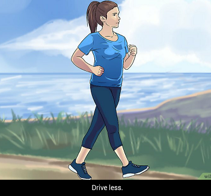
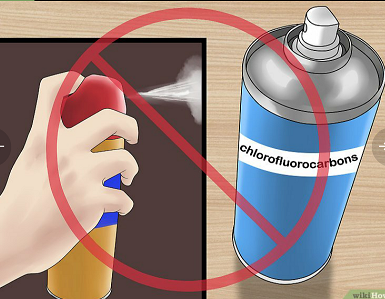
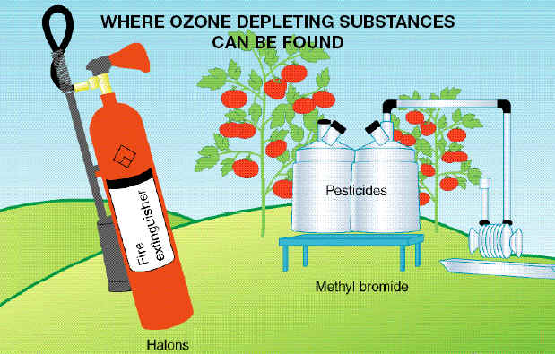
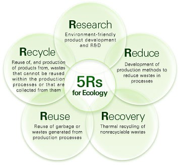
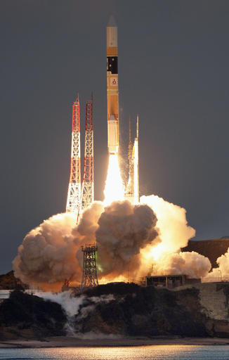
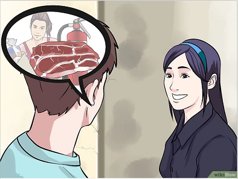
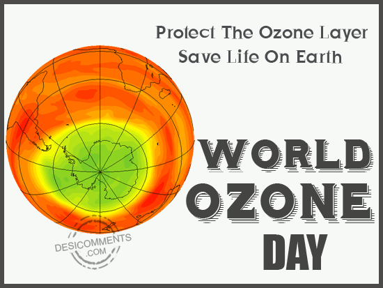
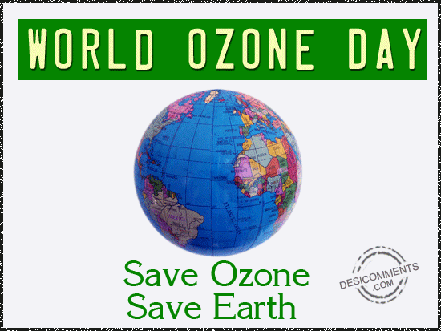
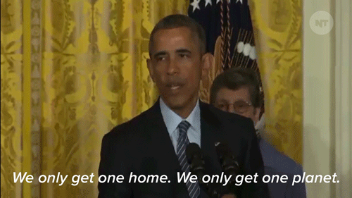
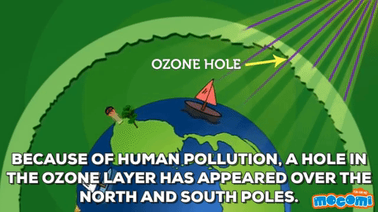

Our website will also participate in saving the ozone layer. There are so many solutions to this problem but we will show you how to protect ozone layer with easy ways...
EARTH'S HEALTH solution:
1. Drive less:

- Nitrous oxide is now the largest ozone depleting substance released by human activities and it is produced in the internal combustion that powers most cars. In the U.S, about 5% of all nitrous oxide pollution comes from vehicles. Use your car only when necessary.To reduce,consider Public transport,Walking,Biking. Remeber that burning fossil fuels breed many substances that damage the ozone layer.
2. Avoid CFCs:

- Don't buy produts with clorofluorocarbons(CFC).The only way to be sure is to check the label on all your household chemicals. Dispose of pre-1995 refrigerators,freezers and air conditioning units properly.These devices use chlorofluorocarbons to function,so leaks release the chemical into the atmosphere. Our environment require service stations and auto repair shops to recycle CFCs.
3. Avoid pesticides:

- Pesticides may be an easy solution for getting rid of weed but are harmful for the ozone layer. The best solution for this would be to try using natural remedies,rather than heading out for pasticides. You can perhaps try to weed manually or mow your graden consistently so as to avoid weed-growth.
4. Use 5Rs:

- We should use the 5rs...which are reuse,recycle,reduce,research,recovery initiative so that next generation does not have to go through problems made by us. It is an easy way for our daily life.5Rs can maintain our environment clean and tidy.
5. Develop regulation:

- The world is progressing in scientific discoveries by leaps and bounds.A lot of rocket launches are happening the world over without consideration of the fact that can damage the ozone layer if it is not regulated soon. A study shows that the harm caused by rocket launches would outpace the harm caused due to CFCs. At present, the global rocket launches do not contribute hugely to ozone layer, but over the course of time,due to the advancement of the space industry,it will become a major contributor to ozone depletion.
6. Share information:

- Make yourself heard.The most important thing that we can do is spreding awearness. Please show this page to your children,relatives,friends and neighbours. Talk to your firends about how they can protect the ozone layer. Shrinking the hole in the ozone layer will take all of us working together.
If you want to know another solutions, links here
|  |  |  |  |  |
 |